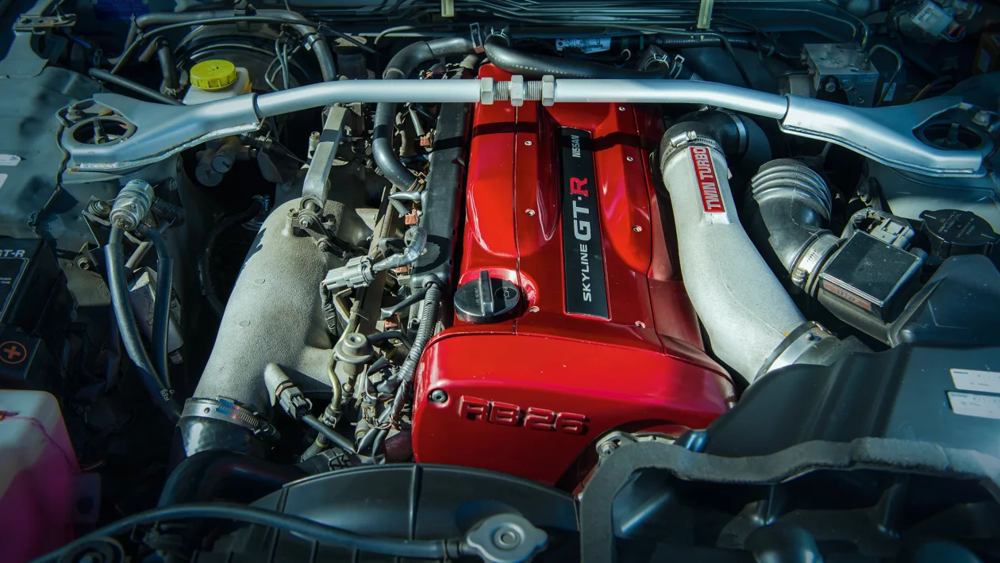
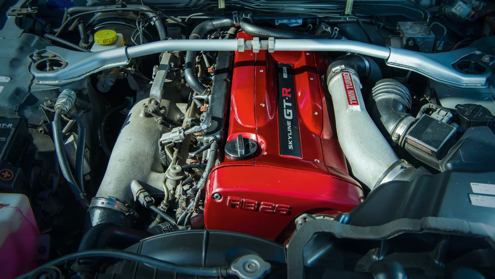

How fast is a Nissan Skyline R34?
Do you know what is the top speed of a Nissan Skyline R34?
R34 GTR was built with a 2569 cc turbo engine and a 6-speed manual transmission that allow R34 to reach an impressive speed of 156 mph or 251.0 kph
Why is R34 called Skyline?
The earliest predecessor of the GT-R, the S54 2000 GT-B, came second in its first race in the 1964 Japanese GP to the purpose-built Porsche 904 GTS. However, the earlier Prince Skyline Sport coupé/convertible foreshadowed the GT-R as the first sports-oriented model in the Skyline range, hence the name.
The GT-R abbreviation stands for Gran Turismo–Racing while the GT-B stands for Gran Turismo-Berlinetta.